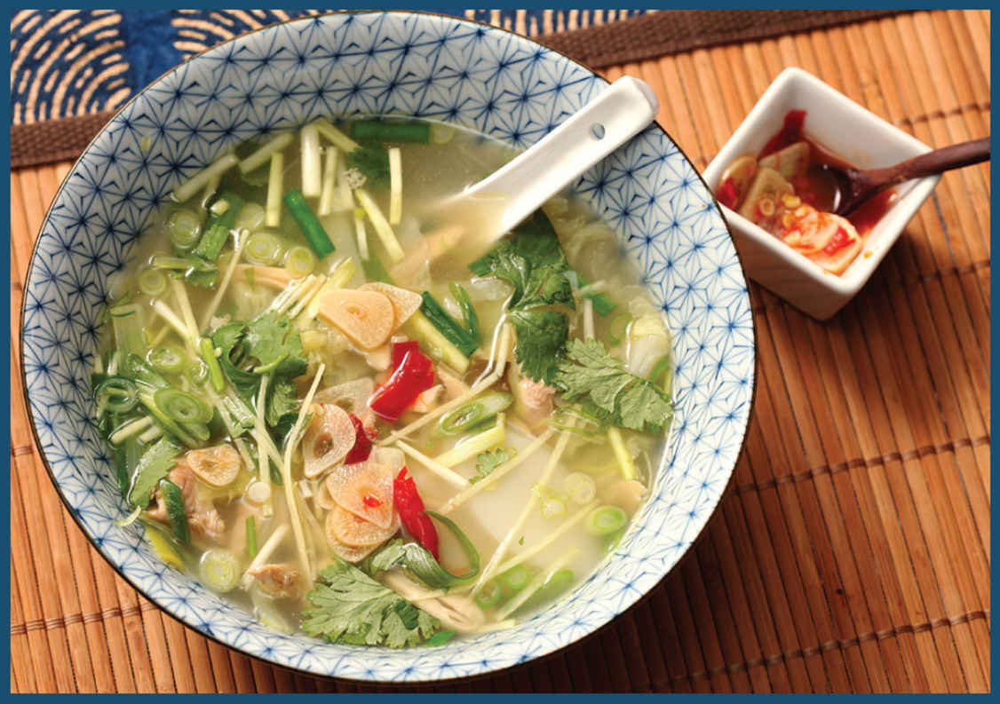

ADD GINGER AND RICE CAKES FOR THE BEST CHICKEN “NOODLE” SOUP
This simple chicken soup is inspired in part by a bowl of samgyetang that I had in Seoul on a dreary December day back in 2012 with my wife, Adri, and my mother, Keiko. Although the classic Korean soup—made by stuffing a whole young chicken with rice, simmering it in a broth flavored with garlic, ginseng, and jujubes, and finishing it with a boatload of scallions—is customarily eaten warm on the hottest days of the summer, on that day it seemed to have been custom-made for warming us up from the wet snow and wind outside.
For a Colombian to not love soup would be like a Boston native forgetting what happened on October 27, 2004, or a Star Wars fan forgetting that Han Shot First. Even though Adri has been a naturalized U.S. citizen since 2013, I’m pretty sure that there are Colombian bylaws that require her to love soup even after she’s sworn her allegiance to another country. I’m not sure what the consequences would be if I failed to provide her with an adequate supply, but I’m not really willing to find out. Over the years I’ve adapted that soup to a simpler version that’s easier to make and easier to eat (and no less warming).
My soup starts with the same whole chicken, but rather than cooking it whole, I hack it into smaller pieces, which allows flavor to be extracted from it more easily. As the pieces finish cooking, I fish them out of the broth and shred the meat, which makes the whole thing easier to eat at the table. I also decided to make the switch from tough-to-find and expensive ginseng root to regular old ginger. I sometimes add leftover rice to the soup, but I prefer using the Korean rice cakes called tteok. I love how they plump up in the soothing broth.
Napa cabbage is wonderful simmered in a gingery chicken broth, and thinly sliced onion, scallions, and Chinese yellow chives (you can use regular chives or omit them with no issue), along with some quick-pickled chiles with garlic (here) round it all out.
Why so many alliums? I think it’s because as a kid, when I had a sore throat, my mother would wrap up a bunch of scallions in a bandana, tie it around my neck, and tell me to lie down without moving. I’m not sure if she really believed this would help or if she was applying some sort of positive punishment to discourage me from my habit of faking colds to get out of school.
Point is, I have no idea if onions are good at curing colds, and a quick internet search reveals that the idea is mostly supported by naturopaths, which automatically makes me dubious. What I do know is that thanks to Pavlovian conditioning, every time cold season comes around, I crave scallions and all of their ilk.
The finished soup is intensely aromatic, warm, soothing, and easy to eat. And most importantly, Adri loves it, which, oddly enough, makes scallions, chives, and garlic key ingredients not just in my soup but in our matrimonial harmony.
